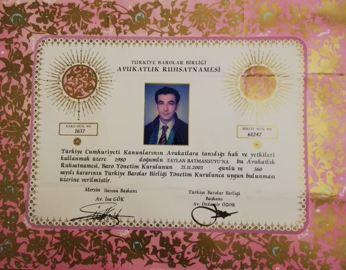

.jpg)
About Us
Firm Overview
Taylan Batmansuyu is a top tier law firm with a long record of excellence and professional leadership in Turkey. Since its foundation in 2003, law firm has been choice of numerous clients in Turkey. Thanks to its nationally recognized litigation group and sophisticated criminal law firms in Turkey.
Skills and Academic Experiences
He graduated from Dokuz Eylul Faculty of Law in 2002. In the Criminal Law Department of the same university; He started a thesis on the concept of unjust provocation in Criminal Law, and had to leave his country for political reasons before his thesis was accepted. In 2007, Taylan BATMANSUYU contributed to the thesis work on comparative selection analysis prepared by Konya Selcuk University lecturer, Associate Professor Ismail Aysad Gudekli. You can reach the thesis study in question from the link below. Thesis Documents He worked as a volunteer lawyer at the Turkish Human Rights Association (IHD). At the same time, as a member of the Progressive Lawyers Association (CHD), he gave legal actions against violations of rights.
Biography
He is married and has a daughter. Unfortunately, he left his country for political reasons in 2020 and is living in exile in Switzerland. He continues to improve himself for a permanent integration in Switzerland with his personality that does not give up producing and struggling despite everything.